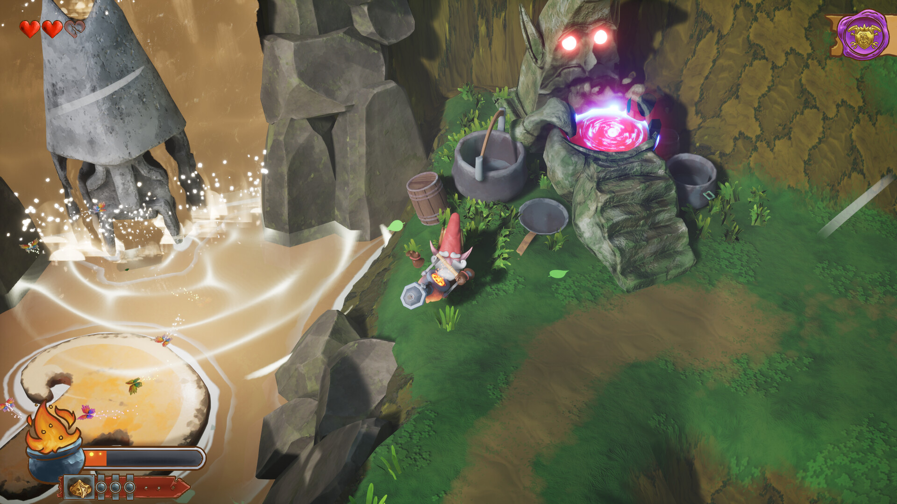
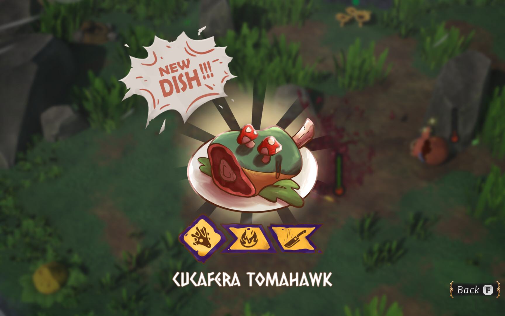

What is GHUNTER?
GHUNTER is a third-person twin-stick shooter built around the fantasy of being a gnome chef who hunts his ingredients live. The core loop has the player exploring a handcrafted world, dispatching enemies using elemental weapons, and turning their kills into increasingly exotic dishes, all to satisfy a growing roster of clients and climb toward the title of Royal Chef.
The game earned Best Student Game at BIG Conference 2024, the most prestigious student game award in Spain, competing against titles from Spain's top game design schools.
What I Designed & Built
I joined as the primary systems and progression designer, responsible for translating the game's core fantasy into interlocking mechanics, data pipelines, and the progression arc that carries the player from their first hunt to the final mission.
The central design challenge was making combat feel like cooking. I designed a three-variable system where every enemy kill produces a unique dish based on how you fight — creating 216 distinct plate outcomes from a compact ruleset.
- Designed the health gauge flow so that each phase (weapon, ingredient, melee) feels distinct and teaches a different combat behavior
- Balanced the relative "rarity" of ingredients so that rare combinations reward exploration without blocking main progress
- Ensured all 216 combinations had a valid dish sprite outcome, working with the art team to define the visual grammar for each variable
To manage the complexity of 216 dish variants across 6 missions, I built a data-driven implementation pipeline that let designers update content without touching Unreal Engine code.
- Authored full design documentation and spreadsheets covering all plate variants, unlock conditions, and mission requirements before a single line was imported
- Built and maintained a CSV database directly imported into Unreal, keeping primary and secondary mission data synchronized in real-time across the team
- Designed the star-rating difficulty system that evaluates plates across 3 tiers, driving the secondary mission reward loop
- Defined all upgrade unlock thresholds — how many stars of each tier a player needs to unlock upgrades through NPC secondary missions
I owned the complete player progression arc from first session to final boss, defining what the player has, what they want next, and how every new tool changes how they interact with the world.
- Defined the required plates for each of the 6 main missions, balancing difficulty and variety across the campaign
- Designed the full weapon unlock system — each weapon is introduced through a main mission gate, and I defined exactly how the player first encounters it, learns it, and integrates it into their repertoire
- Designed the upgrade system — specifying which NPC sells which upgrade, what plates unlock them, and how they interact with player build diversity
- Defined all map statues (collectible challenges) — which plates each requires, so they organically reward player mastery of specific mechanics
- Managed and balanced 10 secondary missions, tuning star requirements to maintain challenge curve without creating frustrating difficulty spikes
With a multi-variable combat system, onboarding was critical. I designed and implemented the complete tutorial experience: the sequence in which mechanics are introduced, and the in-game video popups that demonstrate each one.
- Defined the pedagogical sequence: what the player learns first, second, and third, ensuring each new mechanic builds on the last without overwhelming
- Designed the popup system that surfaces contextual tutorials exactly when the mechanic becomes relevant, not before
- Recorded and edited the in-game tutorial videos shown inside the popup system, writing, capturing, and cutting all video content used in production
- Iterated on tutorial pacing based on playtesting feedback to reduce the drop-off rate in the first 10 minutes of play
Screenshots & Gameplay



Results
GHUNTER shipped on Steam in 2024 and was selected as the Best Student Game at BIG Conference 2024 in Bilbao, the largest and most prestigious game conference in Spain, competing against student titles from Spain's top game design programs.
The 216-plate system was highlighted by judges as a standout example of elegant systems design: maximum content variety generated from a small number of interlocking variables, with no two runs feeling identical. The CSV-driven data pipeline became a production reference for the team and kept mission content agile through the final months of development.